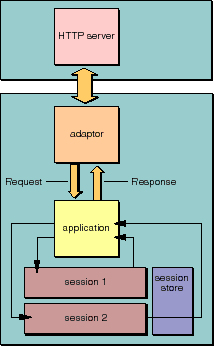

Table of Contents
Table of Contents  Next Section
Table of Contents
Next Section
Table of Contents  Previous Section
Previous Section

Figure 17. Request-Response Loop: Transaction Level
Stores essential data about an HTTP request, such as header information, form values, HTTP version, host and page name, and session, context, and sender IDs.
Stores and allows the modification of HTTP response data, such as header information, status, and HTTP version. It also provides convenience methods for appending HTML and simple textual data to the content of the response (that is, the response page).
Provides access to the objects involved in the current cycle, such as the current request, response, and session objects. It also stores the current component (either the current page or one of its subcomponents) to which the elements of the page make reference when they "push and pull" values through associations. See "How HTML Pages Are Generated" for an explanation. The WOContext object acts as a "cursor," traversing the object graph during each phase of the component action request-response loop. The WOContext for a cycle is identified by a unique context ID.
Table of Contents Next Section